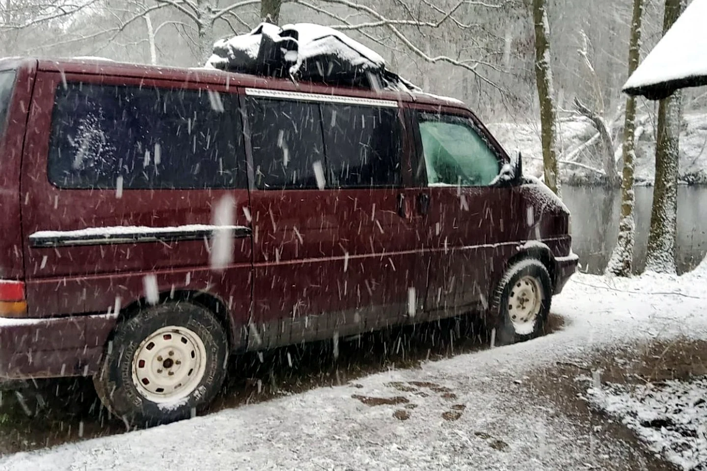

Le rouge nous a quittés — panne moteur sur l’autoroute

Il y a des pannes après lesquelles vous remplacez une pièce, prenez une profonde inspiration et continuez à conduire. Et il y a ce moment où tu ressens : C’est plus grand. Au rouge, ce moment-là arriva sur l’autoroute. Dégâts au moteur. Fin du trajet.
À partir de maintenant, tout s’arrête
Sur l’autoroute, la sécurité passe avant tout : sortez de la zone de danger, allumez les feux de désécurité, gardez la distance avec la circulation et organisez l’aide. Il n’y a vraiment pas de place pour de grandes émotions en ce moment. Ils viennent plus tard — quand la voiture est garée, que le capot est ouvert, et que vous réalisez qu’une petite réparation ne suffira pas.
Je ne note délibérément aucun diagnostic inventé ni prétendue signe d’alerte ici. La seule certitude était que le moteur était cassé et le moteur rouge ne me transporterait pas plus loin. C’est justement pour cela que je préfère le montrer tel qu’il appartenait vraiment à ma vie : sur la route, habité, et plein de souvenirs.
Ce n’était pas juste une voiture
Le rouge était la cuisine, la chambre, la salle de stockage et la retraite. J’avais construit dessus, inventé des solutions, fait des erreurs, et vécu dedans pendant des mois. C’est pourquoi on ne perd pas simplement un véhicule à cause d’une telle panne moteur. Vous perdez les espaces, les routines et les plans que vous y avez associés.
Chaque égratignure avait une histoire. Les avions, l’étagère à l’arrière, le système de gaz, le chauffage, ma petite cuisinière — rien de tout cela n’était un équipement ordinaire. C’était ma maison auto-assemblée. C’est justement pour ça que l’adieu a fait si mal.
La fin d’une étape, pas mon parcours
Le jour de la panne moteur, tout semblait définitif. Aujourd’hui je vois : le Red était toute une étape de mon histoire de vanlife. Ça s’est terminé durement et bien plus tôt que je ne l’aurais voulu. Mais elle m’a aussi montré tout ce que je pouvais faire à présent, et combien cette vie m’appartenait.
Le rouge nous a quittés. Tussy Van est resté. Et finalement, le Blue est arrivé — avec de nouvelles possibilités, de nouveaux chantiers et, comme vous le lirez encore, son propre drame d’atelier.
À bientôt et bon voyage toujours,
votre Tussy 💛